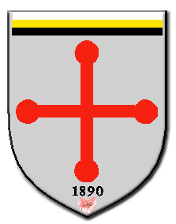
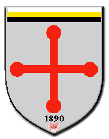

Back to Church's Homepage

Back to Church's Homepage |
|
Church of St. Michael, Ipoh - Parish Priests Past & Present |
|
Legend: |
| NAME | YEARS OF SERVICE |
|---|---|
| Rev Emile BARILLON MEP |
1890-1892 Parish Priest; |
| Rev Pierre Louis PERRICHON MEP |
1892-1900 Parish Priest |
| Rev J. DESCRAQUES MEP |
1900-1901 Parish Priest |
| Rev Emile Joseph MARIETTE MEP |
1901-1902 Parish Priest |
| Rev Pierre RUAUDEL MEP |
1902-1903 Parish Priest |
| Rev Jean Marie VEY MEP |
1903-1904 Parish Priest |
| Rev Jean Baptist COPPIN MEP |
1904-1927 Parish Priest |
| Rev Jules Paul FRANCOIS MEP |
1910 Acting Parish Priest |
| Rev J. Salvat FOURGS MEP |
1911 Acting Parish Priest |
| Rev Michael SEET |
1912-1914 Assistant Parish Priest |
| Rt Rev Jean Marie MEREL MEP |
1915-1927 Assistant Parish Priest |
| Rev Louis GOYHENETCHE MEP |
1921 Acting Parish Priest |
| Rev Joseph SY |
1927-1930 Assistant Parish Priest |
| Rev Louis GOYHENETCHE MEP |
1927-1929 Parish Priest |
| Rev J. Salvat FOURGS MEP |
1929-1937 Parish Priest |
| Rev BENEDICT MEP |
1930-1931 Assistant Parish Priest |
| Rev Jean Francois ALLARD MEP |
1931-1933 Assistant Parish Priest |
| Rev Octave DUPOIRIEUX MEP |
1933-1934 Assistant Parish Priest |
| Rev Ladislav P.GELDER MEP |
1935 Assistant Parish Priest |
| Rev Raymond DUBOIS MEP |
1936 Assistant Parish Priest |
| Rev F. Sylvester WONTUS MEP |
1936-1937 Assistant Parish Priest |
| Rev Bertie J.ASHNESS MEP |
1936-1937 Assistant Parish Priest |
| Rev Marcel SELLIER MEP |
1937 Assistant Parish Priest |
| Rev Raymond DUBOIS MEP |
1937-1938 Assistant Parish Priest |
| Rev Jules Paul FRANCOIS MEP |
1938-1955 Parish Priest |
| Rev Laudel RADEMAKER OCM |
1938-1939 Assistant Parish Priest |
| Rev HOVERS MEP |
1939 Assistant Parish Priest |
| Rev Francis CHAN |
1939-1941Assistant Parish Priest |
| Rev KAPPERS MEP |
1941 Assistant Parish Priest |
| Rev Francis CHAN |
1944-1946 Assistant Parish Priest |
| Rev Anthony KHAW |
1946-1947 Assistant Parish Priest |
| Rev Jean CIATTI MEP |
1947-1960 Assistant Parish Priest |
| Rev Roger LAURENT MEP |
1950-1952 Acting Parish Priest |
| Rev Pierre NARBAIS |
1954-1957 Parish Priest |
| Rev George LEE |
1957-1960 Parish Priest |
| Rev Jean CIATTI MEP |
1960-1970 Parish Priest |
| Rev Andrew LAU |
1962-1966 Assistant Parish Priest |
| Rev Michael THOO | 1968-1972 Assistant Parish Priest |
| Rev Matthias KI |
1970-1979 Parish Priest |
| Rev Anthony CHONG | 1970-1973 Assistant Parish Priest |
| Rev Barnabas GAO |
1973-1975 Assistant Parish Priest |
| Rev Martin LAM | 1973-1979 Assistant Parish Priest |
| Rev Francis CHAO |
1979-1984 Parish Priest |
| Rev Pius THONG | 1984-1989 Assistant Parish Priest |
| Rev Peter PANG |
1984-1995 Parish Priest |
| Rev Charles CHIN | 1995-1999 Parish Priest |
| Rev Paul CHIN |
1999-2001 Parish Priest |
| Rev Edmund WOON | 2001-2005 Parish Priest |
| Rev Marshall FERNANDEZ | 2004-2005 Assistant Parish Priest |
| Rev Michael CHEAH | 2005-2010 Parish Priest |
| Rev Anthony CHONG | 2008-Present Assistant Parish Priest |
| Rev Stephen LIEW | 2010-Present Parish Priest |
Back to Church's Homepage |
|